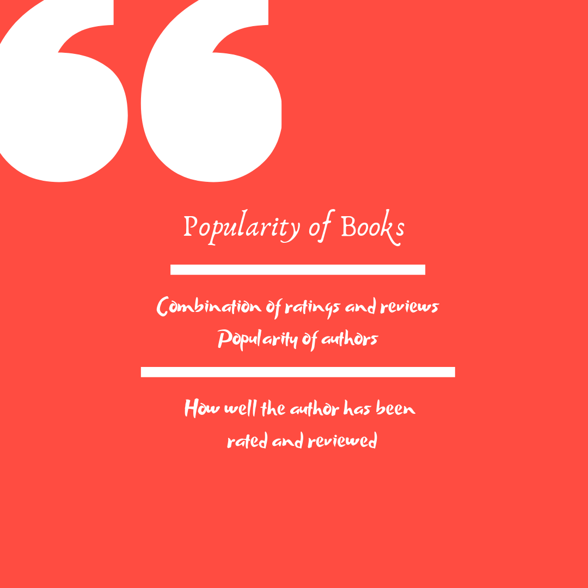

Stories are interesting! So are reviews and ratings!
We know reviews are always interesting and informative to determine the likeliness of indulging in activities and events that we are interested in. This is especially true in case of books. Before choosing our next read, we always go through ratings and reviews online, to see if the book would be of interest to us. But when the reviews are far too many, isn't it difficult to get an idea of how good the book is? This is the main reason we chose to visualize and make the task of analyzing book reviews and ratings in our storytelling task easier.
The three main aspects of visualizing any book are popularity of the book, reputation or popularity of the author, and the popular reviews.

Top 10 highly rated books
"To Kill a Mocking Bird" is found to be most popular book, going by the ratings it has got in total. The author of the book is Harper Lee. It was published in the year 1960. Another interesting fact from this visualization is that Anne Frank has been the author for two books in the top 10 most popular books.
Let's now look at popular authors, based on average ratings they got, for all the books under consideration. This is especially useful to determine if authors who wrote popular (highly rated) books are liked for their work in general. Or were there one time wonders? This is especially true, if an author X wrote a highly rated book, followed by a series of not-so-good books. His overall popularity would now be below average.
Popularity of Authors based on Average ratings over the total number of ratings they got
From this we see that Jeanine Heil is the most highly rated author, although she has been rated only once. While there are other authors like J.K. Rowling whose average rating is the highest at 4.4, with the most number of ratings in total. Ironically, Harper Lee, who wrote the most popular book, is behind many other authors like J.K. Rowling, Jane Austen, J.R.R. Tolkein in terms of overall popularity.
Considering the most popular author, J.K. Rowling, we can look at the word cloud of the reviews she has got as shown below.
A word cloud is a very informative visualization when it comes to texts and words. Most repeated words get a bigger space in the word cloud.
This was the story of popular books and authors that have been listed on GoodReads. Hope you liked the story as much as we did. Start reading today!